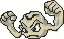

Extending Bug Programs:
Complete the following Extensions of Bug. If possible,
complete by only overriding one method of Bug. Read through the Bug code for
inspiration.
LeftyBug:
Create a Bug that turns to the left instead of right.
This can be done by only overriding the turn() method.
public static void main()
{
ActorWorld world = new ActorWorld();
world.add(new Location(1,1), new LeftyBug() );
world.add(new Bug(Color.BLUE));
world.show();
}
RockWalkerBug:
Create a Bug that only will move to squares that
contain a Rock. Test this Bug by laying down a trail of Rocks for him to move
on. When there are no more Rocks, the RockWalkBug will just spin. This can be
done by only overriding the canMove()
public static void main()
{
BoundedGrid grid = new BoundedGrid(5,5);
ActorWorld world = new ActorWorld(grid);
world.add(new Location(1,0), new RockWalkerBug() );
world.add(new Location(1,1), new Rock() );
world.add(new Location(1,2), new Rock() );
world.add(new Location(2,2), new Rock() );
world.add(new Location(3,2), new Rock() );
world.add(new Location(4,2), new Rock() );
world.add(new Location(4,3), new Rock() );
world.show();
}

public static void main()
{
ActorWorld world = new ActorWorld();
PetriBug pb1 = new PetriBug();
PetriBug pb2 = new PetriBug();
pb1.setColor(Color.RED);
pb2.setColor(Color.BLUE);
world.add(pb1);
world.add(pb2);
world.show();
}